0→1 PM
Carbon Slim
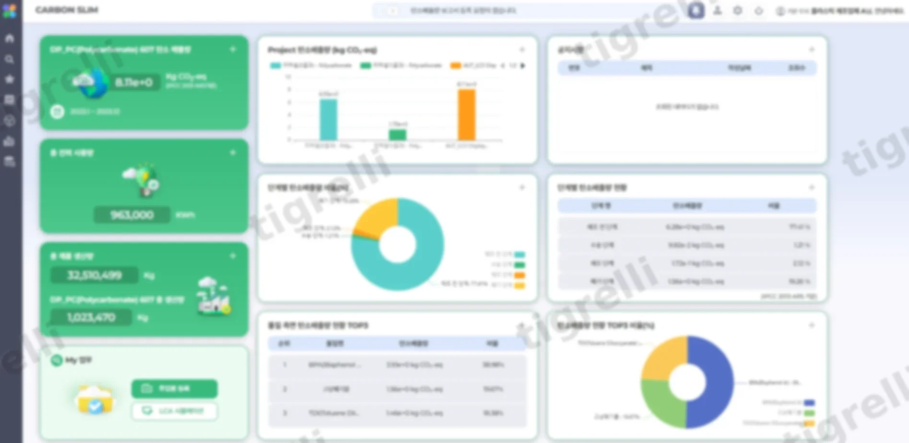
개요
LCA(전과정평가) 방법론을 구현한 탄소관리 솔루션입니다. 탄소 배출량 산정이라는 생소한 도메인을 내부 컨설턴트와 긴밀히 협업하며 빠르게 학습했고, 기업별 맞춤형 산정 프로세스를 표준화해 기획부터 상용화까지 전체 과정을 총괄했습니다.
개발 로드맵을 수립하고 일정(WBS)을 관리하며 프로젝트를 완료했습니다. 요구사항 정리에 그치지 않고 개발자가 바로 착수할 수 있는 수준까지 기능과 화면을 구체화했고, 서비스 흐름이 어긋나지 않도록 프로세스를 먼저 정립한 뒤 화면설계서에 데이터 흐름까지 함께 담았습니다.
기획
-
역할 기반 데이터 입력 분리
전문성이 필요한 항목과 일반 사용자가 입력 가능한 항목을 구분해, 데이터 품질과 사용 편의성을 함께 확보할 수 있도록 입력 경로를 설계했습니다.
-
분석 범위의 유연한 설정
기업 특성과 목적에 맞춰 분석 대상의 범위와 세부 수준을 선택할 수 있게 해, 산정 정밀도를 조정할 수 있도록 설계했습니다.
-
배분(Allocation) 계산의 정확성
여러 제품이 설비나 공정을 공유하는 상황에서도 사용량이 각 제품에 합리적으로 귀속되도록 배분 로직을 설계해, 산정 결과의 정확도를 높였습니다.
-
입력부터 결과 확인까지 이어지는 자동화
데이터 입력부터 결과 산출, 시각화까지 하나의 흐름으로 이어지도록 설계해, 사용자가 별도 분석 없이 결과를 바로 확인할 수 있게 했습니다.
와이어프레임
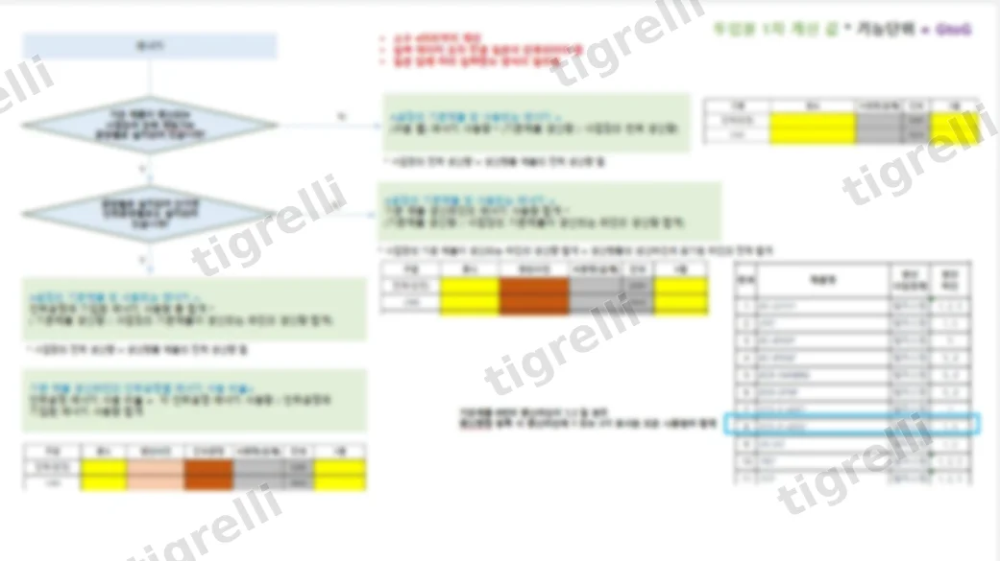
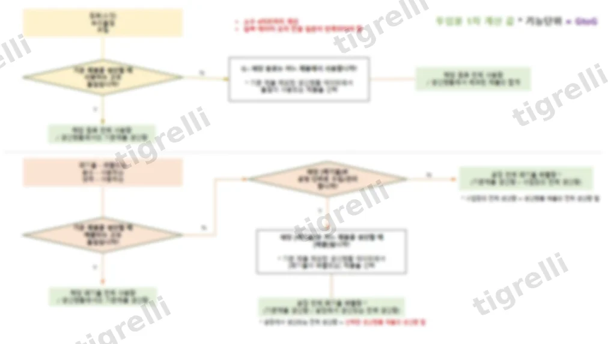
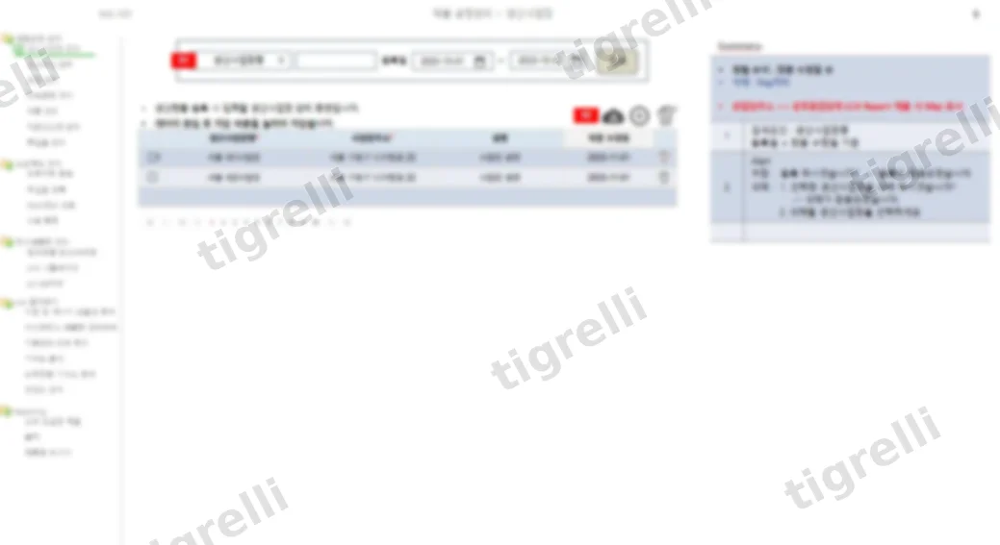
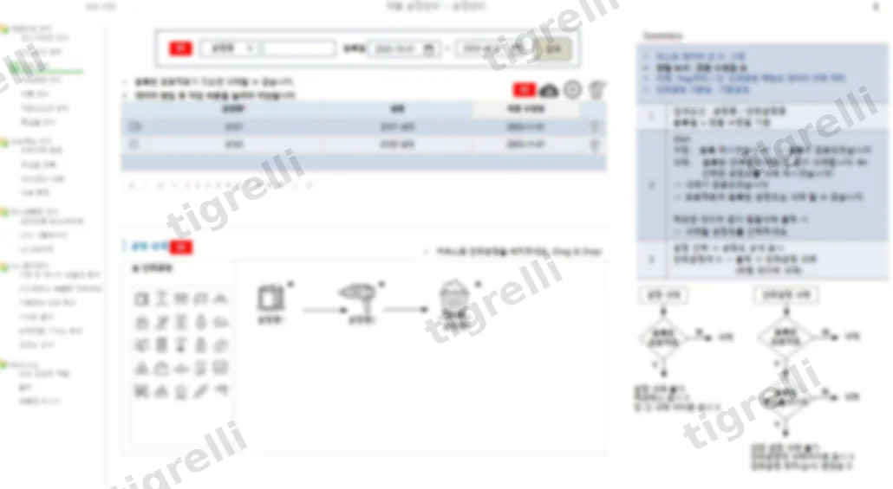
UI 스크린샷
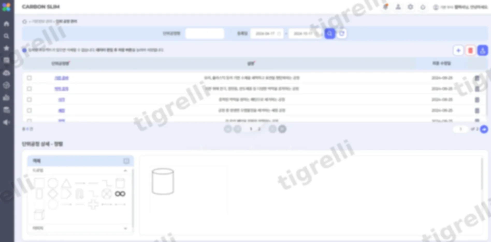
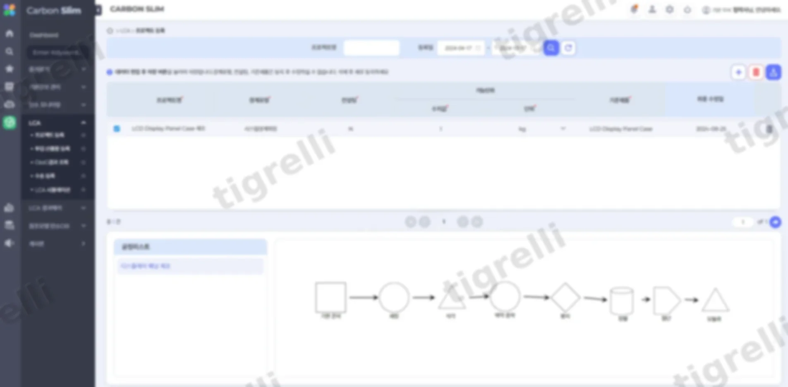
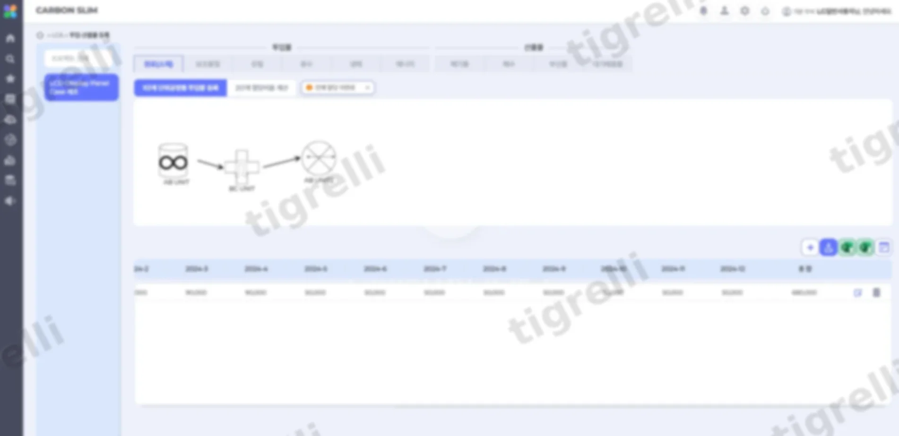
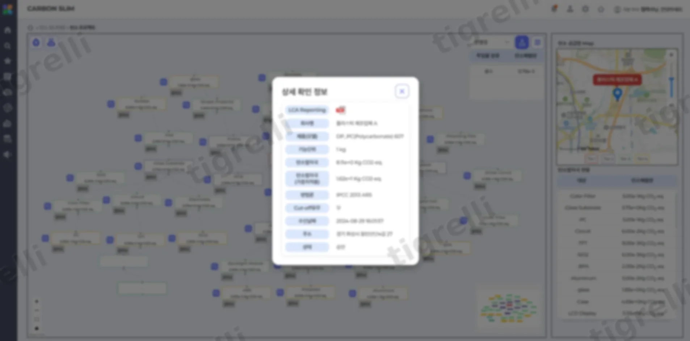
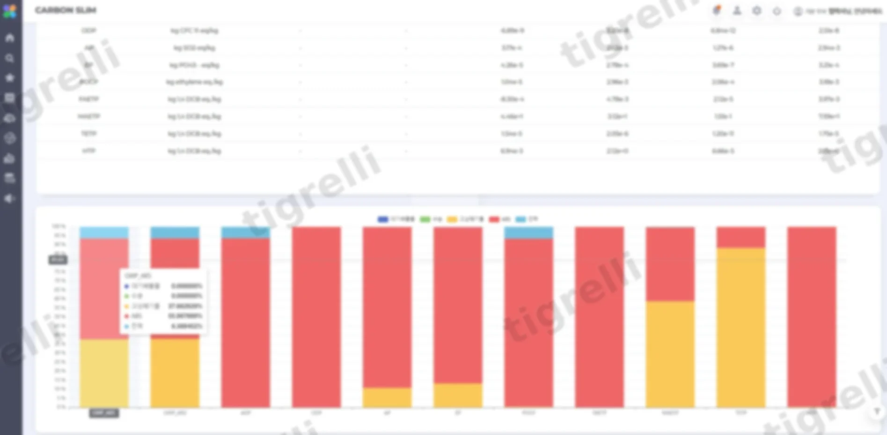
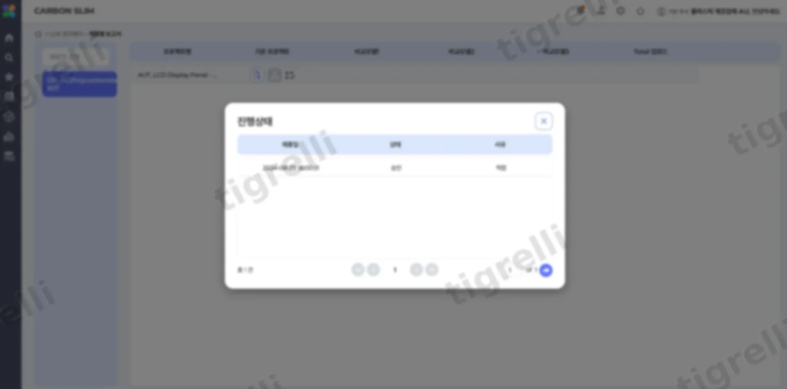
결과 · 회고
초기 기획은 부품 수 50개 미만의 소규모 기업을 타겟으로 했습니다. 그래서 원료 등 기초 데이터 입력과 공정도를 한 화면에 배치해 빠르게 등록할 수 있도록 설계했습니다. 하지만 실제 데모 시연 행사에서 중소 이상, 대기업 규모의 관계자들이 관심을 보이면서 예상하지 못했던 문제가 드러났습니다. 부품 수와 공정이 훨씬 많은 이들 기업 입장에서는 하나의 화면에 모든 활동 데이터를 몰아넣은 구조가 오히려 입력을 불편하게 만드는 UI였던 것입니다.
시장의 관심이 타겟과 다른 층에서 먼저 왔다는 점 자체가 역설적이었고, 그 반응 덕분에 UI 개선은 뒤로 미룰 수 없는 급선무 과제가 되었습니다.
기술적으로는 복잡한 계산 로직을 하나의 일관된 프로세스로 정리하고, 그 정밀도를 테스트로 검증하는 과정이 특히 까다로웠습니다. 배출량 산정처럼 오차가 곧 신뢰도로 직결되는 도메인에서는 로직을 프로세스화하는 것과 그 결과를 검증하는 것이 별개의 난이도로 다가왔습니다.
가장 기억에 남는 것은 고도화 과정이었습니다. 시장 반응은 좋았지만 애초에 고려했던 타겟층이 아니었기 때문에, 대응은 계획된 로드맵이 아니라 촉박한 일정 속에서 이루어졌습니다. 소규모 기업 기준으로 짜여 있던 DB 구조를 대기업 규모의 데이터 양과 복잡도에 맞게 다시 설계하고, 이미 쌓인 데이터를 마이그레이션하는 작업은 이번 프로젝트에서 가장 힘들었던 지점이자 가장 크게 배운 지점이었습니다.
결과적으로는 이 과정을 거쳐 개선된 제품으로 2개 기업과 계약을 체결했고, 이어서 국가사업까지 진행할 수 있었습니다. 처음 설계한 타겟과 실제 시장의 반응이 어긋날 수 있다는 것, 그리고 그 간극을 빠르게 좁히는 과정 자체가 제품의 방향을 결정짓는다는 것을 이 프로젝트를 통해 체감했습니다.